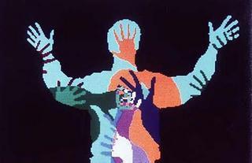
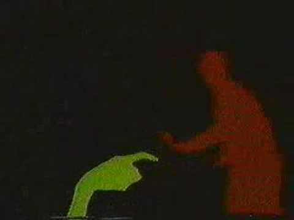

VIDEOPLACE
Artificial reality without goggles

Overview
VIDEOPLACE was an interactive “artificial reality” environment created by Myron Krueger beginning in the mid-1970s. Users in separate rooms stood before large projection screens and video cameras; their live silhouettes were digitized, colored, and placed into a shared virtual space where they could interact with computer graphics and with each other — all without headsets, gloves, or other worn equipment.
Deep dive
Krueger established the Videoplace laboratory in the mid-1970s, first at the University of Wisconsin and later at the University of Connecticut. It grew out of earlier installations: GLOWFLOW (1969), METAPLAY (1975), and PSYCHIC SPACE.
Krueger deliberately avoided goggles and gloves. His goal was an artificial reality that surrounded users and responded to their natural body movements.
The first 1975 environment used no computer; by 1984 Krueger had built a custom real-time system that performed image recognition, image analysis, and graphical response fast enough for live interaction. Projectors, cameras, special-purpose hardware, and software produced colored user silhouettes and 25 different interaction programs.
Users could push, pull, or play with virtual creatures and objects. Because they saw their silhouettes on screen, they experienced social presence: people instinctively pulled away when their silhouettes intersected with another person’s.
The work formed the basis of Krueger’s influential 1983 book Artificial Reality. VIDEOPLACE is now on permanent display at the State Museum of Natural History at the University of Connecticut.
Krueger’s team admitted they never achieved their ultimate goal of a program that could learn independently. The project is usually styled VIDEOPLACE in all caps.
VIDEOPLACE pioneered camera-based full-body interaction, shared virtual spaces, and unencumbered embodied interfaces. It is a direct ancestor of modern depth-camera installations, motion-controlled games, and social VR.
Team & pioneers
- Myron Krueger Artist and computer scientist; created VIDEOPLACE and the concept of "artificial reality," deliberately avoiding headsets and gloves.
- University of Wisconsin Hosted Krueger's early Videoplace laboratory in the mid-1970s.
- University of Connecticut Home of the later Videoplace lab and the permanent installation now at the State Museum of Natural History.
Media
